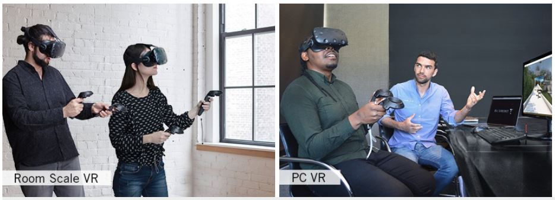

Virtual Reality¶
Note
Our software is aimed at users with a VR Headset and motion controllers. It is compatible with both Oculus and Steam VR Devices.
Choosing your VR Headset¶
If you are going to use LUX Walker in Virtual Reality (VR) Mode, you will need a VR Headset - Head Mounted Display (HMD).
For users who want to set up multiple users in the same room or want full room-scale virtual reality we recommend the HTC Vive, users who work alone at a desk or who want portability can use an Oculus Rift. Both are great devices and have advantages over another.
HTC Vive and Steam VR¶
The HTC Vive and the Valve Index is the best choice for users who want standing, room-scale virtual reality. Offering much larger play space than the competitors.
Detailed product info here.
It is also the only way to get accurate multiple person tracking spaces.
We suggest wall mounting your HTC Vive base stations for the best experience or, for portable setups, mount them on tripods or light stands.
Running the HTC Vive requires a computer with powerful graphics capabilities. Refer to our recommended specs to see if you need to upgrade your computer.
Oculus Rift¶
The Oculus Rift is a great choice for people who want to use VR at their desk or on the go. It is quick to set up and very comfortable to use. However it requires 3 USB 3 Ports.
The Oculus Rift S is even easier as it does not require any extra sensors and only one USB 3 port.
Detailed product info here.
Running the Oculus Rift requires a computer with powerful graphics capabilities. Refer to our System Requirements
System Requirements¶
Note
Our software is aimed at users with a VR Headset and motion controllers. It is compatible with both Oculus and Steam VR Devices.
- Virtual Reality requires a high-end computer aimed at rendering 3D computer graphics as fast as possible.
If at anytime the experience is slow it will cause motion sickness and an uncomfortable experience in VR.
Warning
Please note even the most powerful machine will not run a badly optimized 3D model. Please follow our modeling guidelines outlined in the documentation.
Both Oculus and Valve have recommended system requirements that will work with many smaller projects. For larger projects with more materials and for an overall better experience the requirements are a little higher.
See below for Minimum and Recommended system requirements. For more information see budget section below on choosing the right pc and its importance on rendering speed.
Minimum Requirements:¶
Note
OS 64-bit Windows 7, Windows 8.1, Windows 10
PROCESSOR Intel i5 5th Gen (or equivalent)
MEMORY 8GB
GRAPHICS NVIDIA GeForce GTX 970 4GB+ (or equivalent)
DIRECTX Version 11
STORAGE 5GB available space
Recommended Requirements:¶
Note
OS 64-bit Windows 7, Windows 8.1, Windows 10
PROCESSOR Intel i7 6th Gen (or equivalent)
MEMORY 16GB
GRAPHICS NVIDIA GeForce GTX 980 8GB (or equivalent)
DIRECTX Version 11
STORAGE 5GB available space
Installation¶
Go to https://www.tenebrislab.com/my-account and download LUX WALKER.
Once downloaded, double click on the .exe to begin the installation process.